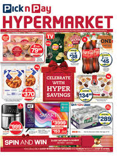
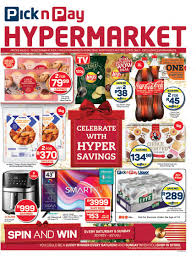

Pick n Pay Group Ltd. is a South African retailer. It operates three brands – Pick n Pay, Boxer and TM Supermarkets. Pick n Pay also operates one of the largest online grocery platforms in sub-Saharan Africa. Raymond Ackerman purchased the first four Pick n Pay stores in Cape Town in 1967 from Jack Goldin.[4] Since then, the Group has grown to encompass stores across South Africa, Namibia, Botswana, Zambia, Nigeria, Eswatini and Lesotho. Pick n Pay also owns a 49% share of Zimbabwean chain TM Supermarkets. As of 2023, the company was operating at 2,204 locations across eight countries on the African continent
 
